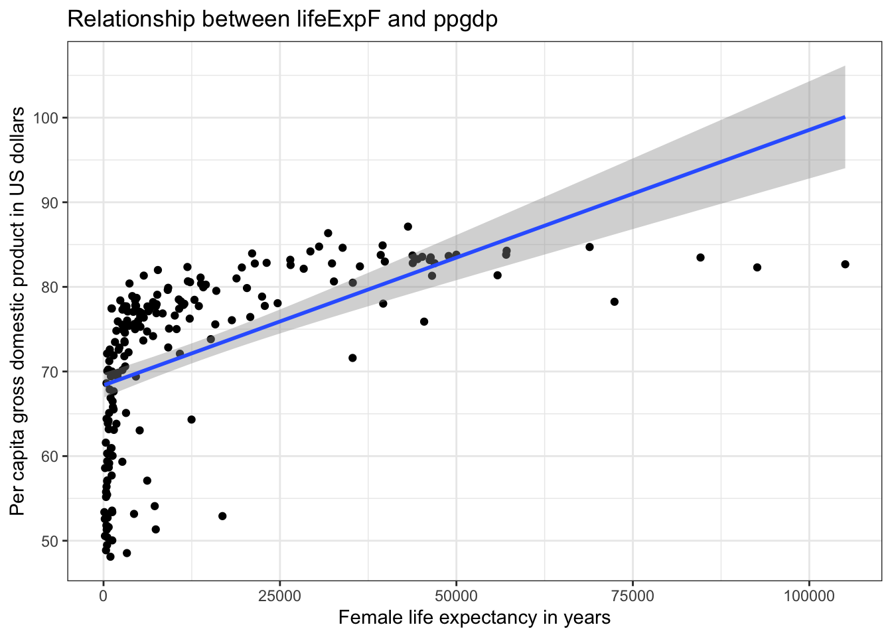
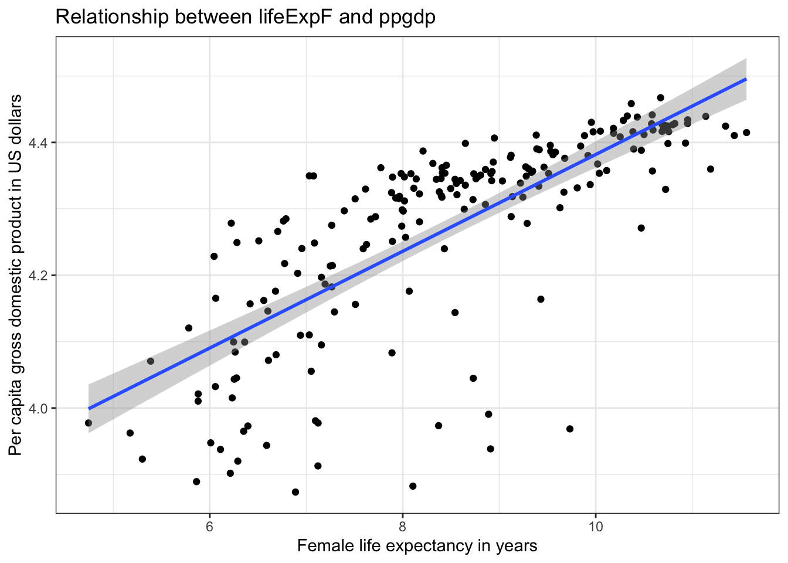
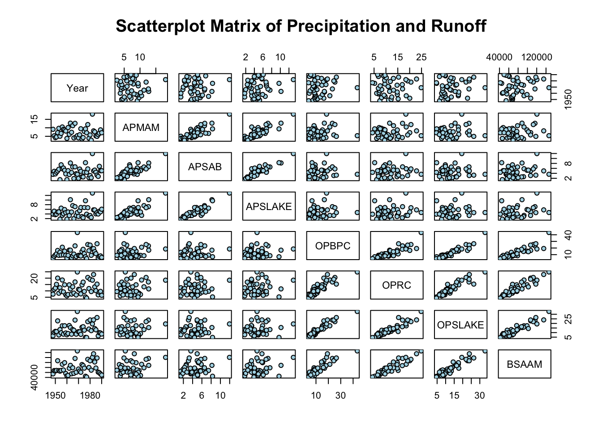
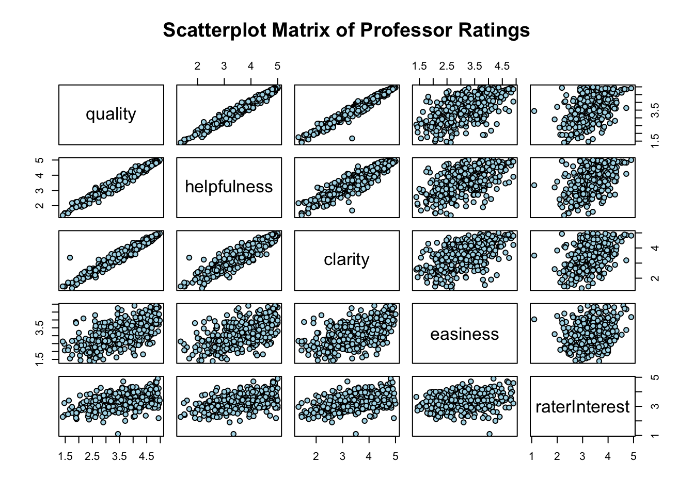
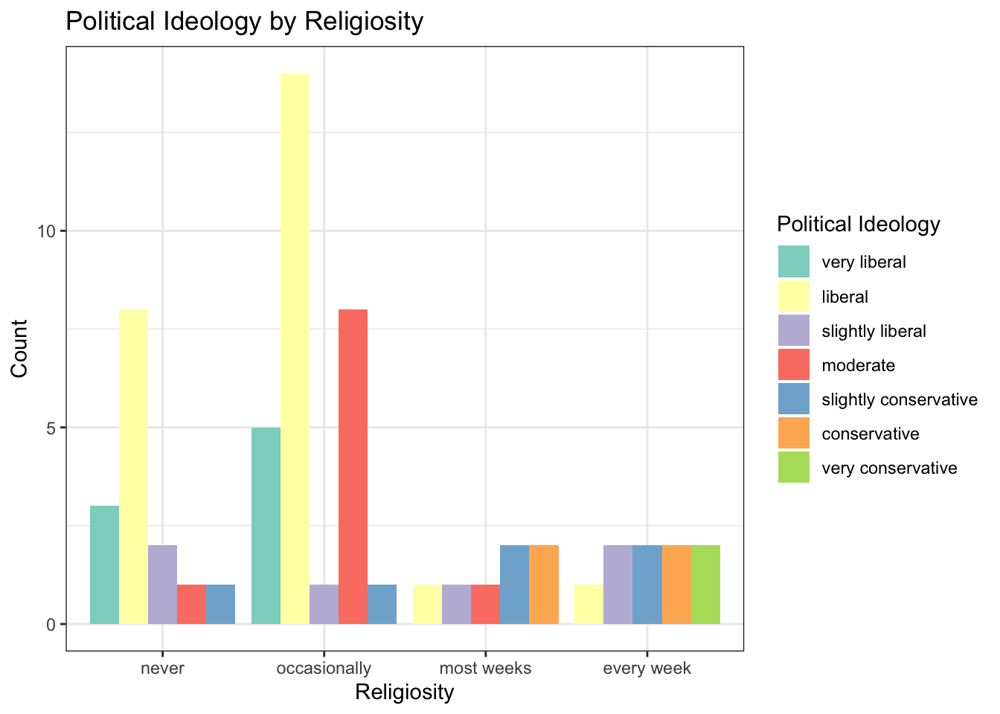
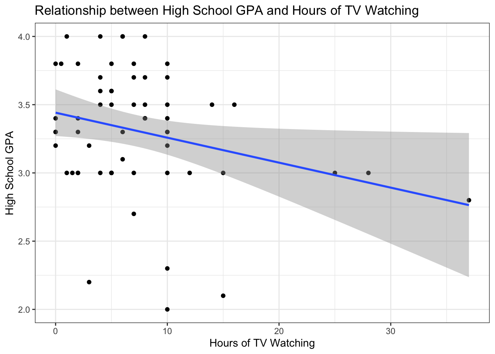

library("alr4")Loading required package: carLoading required package: carDataLoading required package: effectslattice theme set by effectsTheme()
See ?effectsTheme for details.library("smss")
library("ggplot2")
library("tidyr")library("alr4")Loading required package: carLoading required package: carDataLoading required package: effectslattice theme set by effectsTheme()
See ?effectsTheme for details.library("smss")
library("ggplot2")
library("tidyr")data(UN11)
head(UN11) region group fertility ppgdp lifeExpF pctUrban
Afghanistan Asia other 5.968 499.0 49.49 23
Albania Europe other 1.525 3677.2 80.40 53
Algeria Africa africa 2.142 4473.0 75.00 67
Angola Africa africa 5.135 4321.9 53.17 59
Anguilla Caribbean other 2.000 13750.1 81.10 100
Argentina Latin Amer other 2.172 9162.1 79.89 93summary(UN11) region group fertility ppgdp
Africa :53 oecd : 31 Min. :1.134 Min. : 114.8
Asia :50 other :115 1st Qu.:1.754 1st Qu.: 1283.0
Europe :39 africa: 53 Median :2.262 Median : 4684.5
Latin Amer:20 Mean :2.761 Mean : 13012.0
Caribbean :17 3rd Qu.:3.545 3rd Qu.: 15520.5
Oceania :17 Max. :6.925 Max. :105095.4
(Other) : 3
lifeExpF pctUrban
Min. :48.11 Min. : 11.00
1st Qu.:65.66 1st Qu.: 39.00
Median :75.89 Median : 59.00
Mean :72.29 Mean : 57.93
3rd Qu.:79.58 3rd Qu.: 75.00
Max. :87.12 Max. :100.00
Here, lifeExpF i.e female life expectancy can be response variable and almost all other variables can be predictors.
ggplot(UN11, aes(x = ppgdp,
y = lifeExpF)) +
geom_point() +
geom_smooth(method = 'lm') +
labs(x = "Female life expectancy in years",
y = "Per capita gross domestic product in US dollars",
title = "Relationship between lifeExpF and ppgdp") +
theme_bw()`geom_smooth()` using formula = 'y ~ x'
No, a straight-line mean function does not seem to be the most plausible summary for this graph. The scatter plot clearly shows a non-linear relationship between female life expectancy and per capita gross domestic product (ppgdp). At lower levels of ppgdp, there’s a steep increase in life expectancy as ppgdp rises. However, as ppgdp continues to increase, the rate of increase in life expectancy slows down, suggesting a curve rather than a straight line. The data points tend to flatten out at higher levels of ppgdp. There is a dense cluster of points at lower ppgdp values, showing a wide range of life expectancies within that economic bracket. A single straight line would struggle to capture this variability effectively. The relationship suggests diminishing returns. Initial increases in wealth (ppgdp) have a large impact on extending life expectancy, but further increases in wealth have a progressively smaller impact. A straight line cannot represent this kind of diminishing effect. While a straight line might show a general positive trend, it would oversimplify the relationship and fail to capture the important non-linear characteristics present in the data. A curved model would be more appropriate to summarize the relationship between female life expectancy and ppgdp as depicted in this scatter plot.
ggplot(UN11, aes(x = log(ppgdp),
y = log(lifeExpF))) +
geom_point() +
geom_smooth(method = 'lm') +
labs(x = "Female life expectancy in years",
y = "Per capita gross domestic product in US dollars",
title = "Relationship between lifeExpF and ppgdp") +
theme_bw()`geom_smooth()` using formula = 'y ~ x'
Yes, based on the visual inspection of this graph, a simple linear regression model seems reasonably plausible as a summary. This scatter plot shows a generally upward and relatively straight pattern in the relationship between female life expectancy (on the x-axis) and the logarithm of per capita gross domestic product (on the y-axis). As female life expectancy increases, the log of ppgdp also tends to increase in a roughly linear fashion. While there is some scatter around the blue regression line, the spread of the points appears somewhat consistent across the range of female life expectancy. This suggests that the variance of the error term might be relatively constant, a key assumption for simple linear regression. Unlike the previous graph, there isn’t a strong visual indication of a pronounced curve in the relationship. The points don’t seem to systematically deviate from a straight line. The fact to be noted is we used logarithmic values of both dependent and independent variables. While the relationship appears linear on this transformed scale, the relationship between original ppgdp and life expectancy is not fully linear. Also, there is still some noticeable scatter around the regression line, indicating that female life expectancy doesn’t perfectly predict the log of ppgdp. Other factors are likely at play. These all points suggests that further statistical analysis is necessary for a more rigorous assessment.
The slope does change. When the explanatory variable (distance) is converted from miles to kilometers, it undergoes a linear transformation—specifically, multiplication by a constant (1.6). In regression analysis, multiplying a predictor by a constant divides the slope by that same constant. This is because the slope represents the change in the response variable for a one-unit increase in the predictor, and changing the unit of measurement alters the scale of that increase. Therefore, the slope is divided by 1.6 to maintain the same relationship between the variables.
The correlation does not change. Correlation is a standardized, unitless measure of the strength and direction of the linear relationship between two variables. Since it is unaffected by linear transformations such as multiplying a variable by a constant, changing the units of the explanatory variable from miles to kilometers does not affect the correlation coefficient. Thus, the underlying association between the variables remains the same.
data(water)
head(water) Year APMAM APSAB APSLAKE OPBPC OPRC OPSLAKE BSAAM
1 1948 9.13 3.58 3.91 4.10 7.43 6.47 54235
2 1949 5.28 4.82 5.20 7.55 11.11 10.26 67567
3 1950 4.20 3.77 3.67 9.52 12.20 11.35 66161
4 1951 4.60 4.46 3.93 11.14 15.15 11.13 68094
5 1952 7.15 4.99 4.88 16.34 20.05 22.81 107080
6 1953 9.70 5.65 4.91 8.88 8.15 7.41 67594summary(water) Year APMAM APSAB APSLAKE
Min. :1948 Min. : 2.700 Min. : 1.450 Min. : 1.77
1st Qu.:1958 1st Qu.: 4.975 1st Qu.: 3.390 1st Qu.: 3.36
Median :1969 Median : 7.080 Median : 4.460 Median : 4.62
Mean :1969 Mean : 7.323 Mean : 4.652 Mean : 4.93
3rd Qu.:1980 3rd Qu.: 9.115 3rd Qu.: 5.685 3rd Qu.: 5.83
Max. :1990 Max. :18.080 Max. :11.960 Max. :13.02
OPBPC OPRC OPSLAKE BSAAM
Min. : 4.050 Min. : 4.350 Min. : 4.600 Min. : 41785
1st Qu.: 7.975 1st Qu.: 7.875 1st Qu.: 8.705 1st Qu.: 59857
Median : 9.550 Median :11.110 Median :12.140 Median : 69177
Mean :12.836 Mean :12.002 Mean :13.522 Mean : 77756
3rd Qu.:16.545 3rd Qu.:14.975 3rd Qu.:16.920 3rd Qu.: 92206
Max. :43.370 Max. :24.850 Max. :33.070 Max. :146345 pairs(water,
main = "Scatterplot Matrix of Precipitation and Runoff",
pch = 21, bg = "lightblue")
Examining the first row (Year on y-axis) and first column (Year on x-axis), the scatterplots show no strong linear trend between the year and the precipitation measurements at any of the six sites. The points appear randomly scattered, suggesting that over the observed period, there isn’t a consistent increase or decrease in precipitation at these locations. There are fluctuations from year to year, but no clear long-term trend. Similarly, the scatterplot between “Year” and “BSAAM” shows no strong linear trend. The runoff volume fluctuates from year to year, but there’s no clear indication of a consistent increase or decrease in runoff at the Bishop site over this time period. Moreover, there appears to be moderate to strong positive linear relationships among many of the precipitation variables (APMAM, APSAB, APSLAKE, OPBPC, OPRC, OPSLAKE). For instance, the scatterplots between APMAM and APSAB, APMAM and APSLAKE, APSAB and APSLAKE, OPBC and OPRC, OPBC and OPSLAKE, OPRC and OPSLAKE show a general upward trend, suggesting that when precipitation is high at one site, it tends to be higher at these other sites as well. The points are somewhat clustered around an imaginary line, indicating a noticeable positive correlation. However, the relationships aren’t perfectly linear, and there’s some scatter for instance APSLAKE and OPRC, APSLAKE and OPBPC, indicating that precipitation at these sites doesn’t always move in perfect trend.Furthermore, all the scatterplots between the precipitation variables and BSAAM show a positive trend with some being roughly positive. This is crucial and expected because higher precipitation at any of these sites generally corresponds to higher stream runoff. The relationship between OPRC and BSAAM and OPSLAKE and BSAAM seems to show a moderately strong positive linear relationship. The points appear somewhat clustered along an upward trend. The relationships between APMAM and BSAAM, APSAB and BSAAM, APSLAKE and BSAAM, and OPBC and BSAAM also show a positive trend, but the scatter of the points appears a bit wider, suggesting a weaker to moderate positive linear relationship compared to OPRC and OPSLAKE. This indicates that these precipitation sites might be slightly less directly correlated with the runoff at the Bishop site, or that other factors have a more significant influence on this relationship.
# png("scatterplot_matrix_prec_runoff.png", width = 1600, height = 1600, res = 200)
# pairs(water,
# main = "Scatterplot Matrix of Precipitation and Runoff",
# pch = 21,
# bg = "lightblue")
# dev.off()data(Rateprof)
head(Rateprof) gender numYears numRaters numCourses pepper discipline dept
1 male 7 11 5 no Hum English
2 male 6 11 5 no Hum Religious Studies
3 male 10 43 2 no Hum Art
4 male 11 24 5 no Hum English
5 male 11 19 7 no Hum Spanish
6 male 10 15 9 no Hum Spanish
quality helpfulness clarity easiness raterInterest sdQuality sdHelpfulness
1 4.636364 4.636364 4.636364 4.818182 3.545455 0.5518564 0.6741999
2 4.318182 4.545455 4.090909 4.363636 4.000000 0.9020179 0.9341987
3 4.790698 4.720930 4.860465 4.604651 3.432432 0.4529343 0.6663898
4 4.250000 4.458333 4.041667 2.791667 3.181818 0.9325048 0.9315329
5 4.684211 4.684211 4.684211 4.473684 4.214286 0.6500112 0.8200699
6 4.233333 4.266667 4.200000 4.533333 3.916667 0.8632717 1.0327956
sdClarity sdEasiness sdRaterInterest
1 0.5045250 0.4045199 1.1281521
2 0.9438798 0.5045250 1.0744356
3 0.4129681 0.5407021 1.2369438
4 0.9990938 0.5882300 1.3322506
5 0.5823927 0.6117753 0.9749613
6 0.7745967 0.6399405 0.6685579pairs(Rateprof[c("quality", "helpfulness", "clarity", "easiness", "raterInterest")],
main = "Scatterplot Matrix of Professor Ratings",
pch = 21,
bg = "lightblue")
# png("scatterplot_matrix_prof_ratings.png", width = 1600, height = 1600, res = 200)
# pairs(Rateprof[c("quality", "helpfulness", "clarity", "easiness", "raterInterest")],
# main = "Scatterplot Matrix of Professor Ratings",
# pch = 21,
# bg = "lightblue")
# dev.off()There are strong positive linear relationships among quality, helpfulness, and clarity. The points in these scatterplots are tightly clustered around an upward-sloping line. This suggests that instructors rated highly on one of these dimensions tend to be rated highly on the others as well. For example, professors considered high quality are also very likely to be seen as helpful and clear. Here quality, helpfulness, and clarity are strongly and positively correlated with each other. Students tend to rate instructors similarly across these three dimensions. Moreover, there appears to be a positive relationship or perhaps a more complex, non-linear relationship of easiness with quality, helpfulness and clarity. While there are instructors rated as all high quality, easiness, helpful and clarity, ohers as low quality, easiness, clarity and clarity. Also, tthere’s a slight tendency for higher easiness ratings to be associated with somewhat lower quality (similarly for helpfulness and clarity), ratings (more challenging courses) and vice-versa However, this relationship is not very strong. Similarly, there is slightly strong linear relationship between raterInterest and quality, helpfulness, clarity, easiness (with easiness being lowest strong). Students more interested in the subject matter might be slightly more likely to give higher quality ratings to the instructor. However, this relationship is not very strong. Students interested in the subject might perceive the instructor as slightly more helpful and students interested in the material might find the instructor’s explanations slightly clearer, or vice versa. Moreover, there is a very weak or no clear linear relationship between the easiness of the course and the rater’s interest in the subject matter which is interesting.
Ton summaries, students’ perceptions of an instructor’s quality, helpfulness, and clarity are closely intertwined. “easiness” appears to be a somewhat distinct dimension of instructor evaluation, not strongly tied to the other positive attributes. Also, student’s pre-existing interest in the subject matter might have a small positive influence on their perception of the instructor’s quality, helpfulness, and clarity.
data("student.survey")
head(student.survey) subj ge ag hi co dh dr tv sp ne ah ve pa pi re
1 1 m 32 2.2 3.5 0 5.0 3 5 0 0 FALSE r conservative most weeks
2 2 f 23 2.1 3.5 1200 0.3 15 7 5 6 FALSE d liberal occasionally
3 3 f 27 3.3 3.0 1300 1.5 0 4 3 0 FALSE d liberal most weeks
4 4 f 35 3.5 3.2 1500 8.0 5 5 6 3 FALSE i moderate occasionally
5 5 m 23 3.1 3.5 1600 10.0 6 6 3 0 FALSE i very liberal never
6 6 m 39 3.5 3.5 350 3.0 4 5 7 0 FALSE d liberal occasionally
ab aa ld
1 FALSE FALSE FALSE
2 FALSE FALSE NA
3 FALSE FALSE NA
4 FALSE FALSE FALSE
5 FALSE FALSE FALSE
6 FALSE FALSE NAcontingency_table <- table(student.survey$pi, student.survey$re)
print(contingency_table)
never occasionally most weeks every week
very liberal 3 5 0 0
liberal 8 14 1 1
slightly liberal 2 1 1 2
moderate 1 8 1 0
slightly conservative 1 1 2 2
conservative 0 0 2 2
very conservative 0 0 0 2chi2_test <- chisq.test(contingency_table)Warning in chisq.test(contingency_table): Chi-squared approximation may be
incorrectprint(chi2_test)
Pearson's Chi-squared test
data: contingency_table
X-squared = 42.288, df = 18, p-value = 0.001008Here, the p-value (0.001008) is less than the conventional significance level of 0.05. This indicates that the observed association between political ideology and religiosity in the sample is statistically significant. The null hypothesis for the Chi-squared test of independence is that there is no association between the two variables in the population. Since the p-value is small, we reject the null hypothesis. Based on this analysis, there is evidence to suggest that political ideology and religiosity are associated with each other in the population from which this student survey was drawn. In other words, a student’s political ideology appears to be related to how often they attend religious services.
ggplot(student.survey, aes(x = re, fill = pi)) +
geom_bar(position = "dodge") +
labs(
x = "Religiosity",
y = "Count",
fill = "Political Ideology",
title = "Political Ideology by Religiosity") +
scale_fill_brewer(palette = "Set3") +
theme_bw()
library(nnet)
model_pi_re <- multinom(pi ~ re, data = student.survey)# weights: 35 (24 variable)
initial value 116.754609
iter 10 value 81.628227
iter 20 value 80.407477
iter 30 value 80.403774
final value 80.403771
convergedsummary(model_pi_re)Call:
multinom(formula = pi ~ re, data = student.survey)
Coefficients:
(Intercept) re.L re.Q re.C
liberal 8.262867 13.11318 0.2426610 -6.230771
slightly liberal 7.429807 15.09822 1.2156300 -7.536133
moderate 1.396177 -2.02171 -12.9311105 -11.692852
slightly conservative 7.429812 15.71818 0.5224753 -7.846120
conservative -1.125391 30.83460 0.9419353 -15.873304
very conservative -9.585370 26.08750 15.8922067 2.772396
Std. Errors:
(Intercept) re.L re.Q re.C
liberal 0.4260446 0.6976499 0.7332893 0.71580966
slightly liberal 0.5159669 0.7229735 0.8902570 0.95157059
moderate 0.5210480 0.6417234 0.7874418 0.70458681
slightly conservative 0.5357291 0.8331185 0.9196031 0.89737745
conservative 0.4404400 0.2774133 0.4636613 0.43188026
very conservative 0.4063091 0.2725604 0.2031545 0.09085348
Residual Deviance: 160.8075
AIC: 208.8075 The multinomial logistic regression model suggests a statistically significant relationship between religiosity and political ideology. The coefficients indicate how changes in religiosity are associated with the likelihood of identifying with different political ideologies, relative to the baseline “conservative” group. For example, the positive and relatively large coefficient for re.L in the “liberal” row (13.11318) suggests a strong positive linear trend: as religiosity decreases (moving from “every week” towards “never”), the log-odds of being “liberal” compared to “conservative” significantly increase. Similarly, the large negative coefficient for re.L in the “very conservative” row (-9.585370) suggests a strong negative linear trend: as religiosity decreases, the log-odds of being “very conservative” compared to “conservative” significantly decrease. The multinomial logistic regression analysis provides evidence that religiosity is a significant predictor of political ideology in this student survey data. The coefficients reveal the direction and magnitude of the relationship between different levels of religiosity and the likelihood of identifying with various political ideologies, relative to the “conservative” baseline. Lower levels of religiosity appear to be associated with a higher likelihood of identifying as more liberal, while higher levels of religiosity are associated with a higher likelihood of identifying as more conservative (compared to other ideologies). The non-linear terms (re.Q, re.C) indicate more complex aspects of this relationship beyond a simple linear trend.
model_lm_categorical <- lm(as.numeric(pi) ~ factor(re), data = student.survey)
summary(model_lm_categorical)
Call:
lm(formula = as.numeric(pi) ~ factor(re), data = student.survey)
Residuals:
Min 1Q Median 3Q Max
-2.8889 -0.5172 -0.2667 1.2040 2.7333
Coefficients:
Estimate Std. Error t value Pr(>|t|)
(Intercept) 3.5253 0.1958 18.000 < 2e-16 ***
factor(re).L 2.1864 0.3919 5.579 7.27e-07 ***
factor(re).Q 0.1049 0.3917 0.268 0.790
factor(re).C -0.6958 0.3915 -1.777 0.081 .
---
Signif. codes: 0 '***' 0.001 '**' 0.01 '*' 0.05 '.' 0.1 ' ' 1
Residual standard error: 1.315 on 56 degrees of freedom
Multiple R-squared: 0.3872, Adjusted R-squared: 0.3544
F-statistic: 11.8 on 3 and 56 DF, p-value: 4.282e-06The highly significant F-statistic indicates that religiosity, when treated as a categorical factor, has a statistically significant effect on the numerical representation of political ideology. This means that the mean political ideology scores differ significantly across the different levels of religiosity. The highly significant positive coefficient for factor(re)L suggests a strong linear trend in numerical political ideology score across the levels of religiosity. Assuming an order from more religious to less religious for re and a numerical coding for pi where higher values represent a certain political direction (e.g., more conservative), this indicates a significant tendency for political ideology to shift in one direction as religiosity decreases. The quadratic and cubic contrasts (factor(re)Q and factor(re)C) are not statistically significant at the conventional 0.05 level, suggesting that the relationship between religiosity and numerical political ideology is primarily linear. The R-squared of around 0.39 indicates that religiosity explains a moderate portion of the variation in the numerical political ideology scores. Other factors not included in this model also contribute to differences in political ideology.
ggplot(data = student.survey, aes(x = tv, y = hi)) +
geom_point() +
geom_smooth(method = 'lm') +
labs(x = "Hours of TV Watching",
y = "High School GPA",
title = "Relationship between High School GPA and Hours of TV Watching") +
theme_bw()`geom_smooth()` using formula = 'y ~ x'
The scatter plot shows individual data points representing students, with their hours of TV watching on the x-axis and their High School GPA on the y-axis. A blue line represents the fitted linear regression model, illustrating the estimated trend in GPA as TV watching hours change. The shaded gray area around the blue line represents the confidence interval for the regression line, indicating the uncertainty in the estimated relationship. Visually, there appears to be a slight negative trend, suggesting that as hours of TV watching increase, GPA tends to decrease. However, the scatter of points indicates that this relationship might not be very strong.
model2 <- lm(hi ~ tv, data = student.survey)
summary(model2)
Call:
lm(formula = hi ~ tv, data = student.survey)
Residuals:
Min 1Q Median 3Q Max
-1.2583 -0.2456 0.0417 0.3368 0.7051
Coefficients:
Estimate Std. Error t value Pr(>|t|)
(Intercept) 3.441353 0.085345 40.323 <2e-16 ***
tv -0.018305 0.008658 -2.114 0.0388 *
---
Signif. codes: 0 '***' 0.001 '**' 0.01 '*' 0.05 '.' 0.1 ' ' 1
Residual standard error: 0.4467 on 58 degrees of freedom
Multiple R-squared: 0.07156, Adjusted R-squared: 0.05555
F-statistic: 4.471 on 1 and 58 DF, p-value: 0.03879The analysis reveals a statistically significant negative linear relationship between hours of TV watching and High School GPA. This means that, on average, for each additional hour of TV watched per week, a student’s High School GPA is estimated to decrease by approximately 0.018 points. However, the R-squared value of 0.0716 indicates that only about 7.16% of the variation in High School GPA can be explained by the number of hours of TV watching. This suggests that other factors not included in this simple model likely play a much larger role in determining a student’s GPA. While the relationship is statistically significant, the practical significance might be limited due to the small effect size (a decrease of only 0.018 GPA points per hour of TV) and the low amount of variance explained. The inferential analysis suggests that there is a statistically significant, albeit weak, negative linear relationship between hours of TV watching and High School GPA in this student survey data. While we can conclude that more TV watching is associated with slightly lower GPAs on average, Hours of TV Watching is not a strong predictor of High School GPA, and other factors are likely more influential.